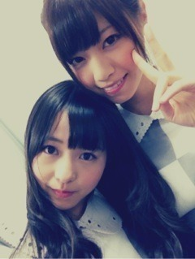

| 2012/08 20 Mon | 209回目*marika |
いつも読んでくださってる方、
初めて読んでくださった方、
コメントしてくださった方、
ありがとうございます。
今日はOffでした。
ソファーに座ったら
何時の間にか寝てた

**********
 ロース派、カルビ派、
ロース派、カルビ派、
それともホルモン派の、どれかいな？
 塩タン一筋
塩タン一筋
 ぇ
ぇ
焼肉食べたいよーーーーーー
富士Qのスタンプの絵は
なんであれにしたの？
ねずみちゃんを描いたんだよ！
だって「マッドマウス」だもの。
あの顔はずっと前から描いてた顔なの
口大きくてかわいいでしょ
 ？
？
？
プライベートで富士Ｑ
行ったことある?
乃木坂４６に入る前とか!
もちろん‼
伊藤家は絶叫系だいすきだからね

パパ、ママ、お兄ちゃんと行ったよー
乃木坂入る前。
私は怖くてドドンパしか乗ってない笑
握手会って待ち遠しい？★
そりゃっもう‼
みなさんに会いたくて
しょーがないわよっっ

ファッションアイテムで、
好きなアイテムってある？
今はワンピースかなぁ。
長めででろんでろんで変な形の‼
帽子も靴もすき
早く秋になってー！
ニット着たいー
中華だったら何が好き？
青椒肉絲、ゴマ団子。
ハイジ好きですか？
そんな見たことないー
 鼻かっこいいって言われない？
え？初めて言われた
鼻かっこいいって言われない？
え？初めて言われた

鼻かっこいい⁇
私服写メのディパックは
まぁりのアレンジなの??
ディパックって...
リュックのことかな⁇
バッジもっといっぱい
付けることもあるよー！
ヴィンテージ缶バッジ集めてるの

そもそもまりかは演技得意なの？
得意じゃないよ！
**********

FNSの時‼
明日も頑張りまりかー

まりか
コメント(137)
2012/08/20 01:07